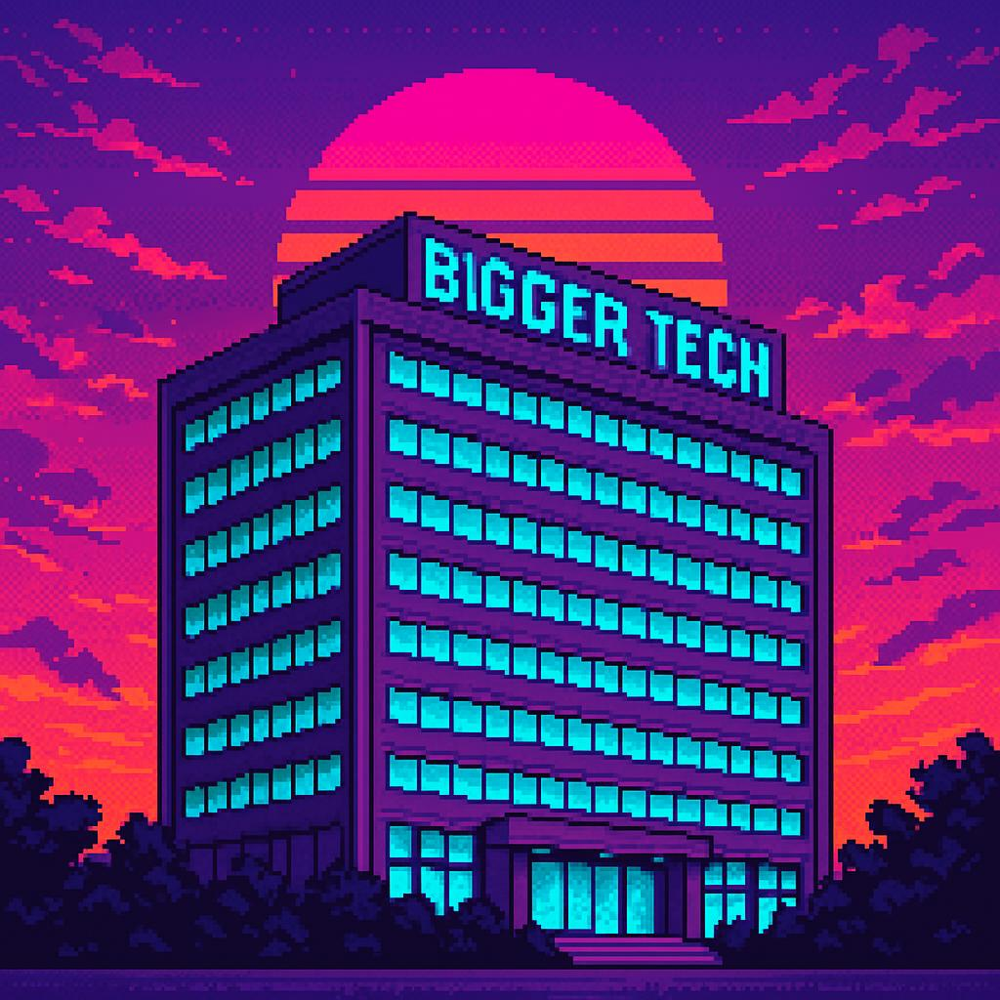

Background
Policy school discipline meets techno-political storytelling.
Keaton Lee studied public policy at Harvard, philosophy at William & Mary, and computer science at TJHSST before founding Machinic Anarchy, the studio behind Mental Break.1
He treats the game as a living research lab: every narrative system is a thought experiment about how human-AI relationships could either reinforce or resist societal dysfunction.
Harvard
Master in Public PolicyWilliam & Mary
Philosophy & EthicsTJHSST
Computer Science Roots
